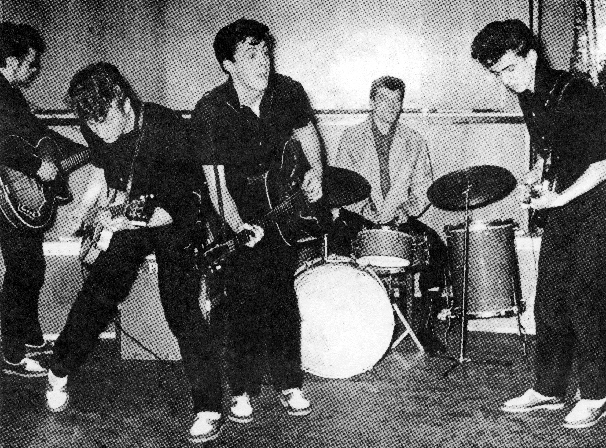
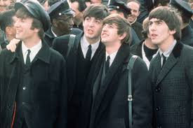
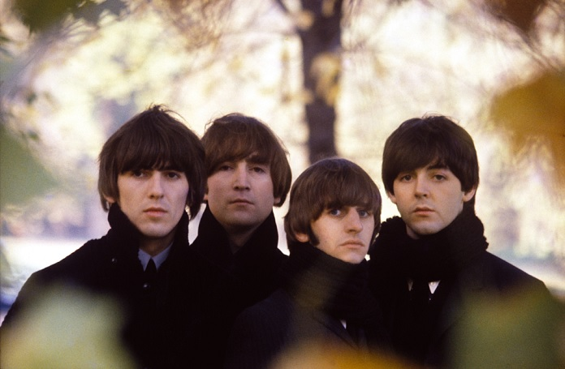
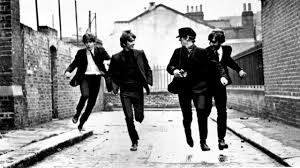
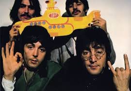

The Beatles foi uma banda de rock inglesa formada em 1960 na cidade de Liverpool. Formada por John Lennon, Paul McCartney, George Harrison e Ringo Starr, é considerada a banda mais influente de todos os tempos. O grupo fez parte do desenvolvimento da contracultura da década de 1960 e do reconhecimento da música popular como forma de arte. Enraizados do skiffle, beat e rock and roll da década de 1950, seu som incorporava elementos da música clássica e pop tradicional de maneiras inovadoras; a banda mais tarde explorou estilos musicais que variavam de baladas e música indiana a psicodelia e hard rock. Como pioneiros em gravação, composição e apresentação artística, o grupo revolucionou muitos aspectos da indústria da música e foi frequentemente divulgado como líder dos movimentos juvenis e socioculturais da época.
Fatos sobre os Beatles

Liderados por Lennon e McCartney, a banda construiu sua reputação tocando em clubes de Liverpool e Hamburgo durante três anos a partir de 1960, inicialmente com Stuart Sutcliffe tocando baixo. Lennon, McCartney e Harrison, juntos desde 1958, passaram por uma sucessão de bateristas, incluindo Pete Best, antes de pedirem a Starr que se juntasse a eles, em 1962.

No início de 1964, os Beatles tornaram-se estrelas internacionais, liderando a "Invasão Britânica" do mercado pop dos Estados Unidos e quebrando vários recordes de vendas. Eles logo fizeram sua estreia no cinema com A Hard Day's Night (1964).

A partir de 1965, eles produziram gravações cada vez mais inovadoras, incluindo os álbuns Rubber Soul (1965), Revolver (1966) e Sgt. Pepper's Lonely Hearts Club Band (1967), tendo maior sucesso comercial com The Beatles (1968) e Abbey Road (1969). Em 1968, eles fundaram a Apple Corps, uma corporação multimídia que continua supervisionando projetos relacionados ao legado da banda.

Os Beatles lideram a lista de artistas mais vendidos de todos os tempos, com vendas certificadas de mais de 183 milhões de unidades nos Estados Unidos e vendas estimadas de 600 milhões de unidades em todo o mundo. Eles detêm o recorde da maioria de álbuns número um na parada de álbuns do Reino Unido, maioria de hits número um na parada Hot 100 da Billboard e maioria de singles vendidos no Reino Unido.

Os Beatles lideram a lista de artistas mais vendidos de todos os tempos, com vendas certificadas de mais de 183 milhões de unidades nos Estados Unidos e vendas estimadas de 600 milhões de unidades em todo o mundo. Eles detêm o recorde da maioria de álbuns número um na parada de álbuns do Reino Unido, maioria de hits número um na parada Hot 100 da Billboard e maioria de singles vendidos no Reino Unido.